CPU clock chain
Green values were measured on the 8-channel board. Nominal values assume 19.09575 MHz. The firmware's baud table only fits f_sys = 16.762–16.781 MHz, i.e. a 29.10–29.13 kHz reference.
Memory map, running
- At reset only CSBOOT is set: $000000–$0FFFFF, 1 MB, 16-bit. Reset vectors SSP $00020000, PC $00089F5C.
- All chip selects asynchronous, S+U space, IPL 0, AVEC 0. Bus monitor off (SYPCR $00): a read outside every chip select hangs the BDM link until
bdm reset.
CSPAR0 $3BFF CSPAR1 $03EE
CSBOOT $0806 $7870 CS0 $FFC8 $7470 CS1 $FFD0 $7430 CS2 $FFC8 $6C30
CS3 $FFC8 $6C30 CS4 $0201 $78B0 CS5 $FFE0 $7C70 CS6 $FFD8 $7830
CS7 $FFE8 $7830 CS8 $0004 $7830 CS9 $1006 $7870 CS10 $1806 $7870
Boot flash
- 256 KB, two 8-bit chips (one per byte lane).
third_party/moto/B4121P1115-flash.bin, three reads identical.- SHA-256 48ea2488486df858bd81c76d9c52acf761d9ea9389581ac1443a8d44d8e75890
- Last 8 bytes: $00C5B910 = sum of even bytes, $00EC4899 = sum of odd bytes, over $00000–$3FFF7. Both verified.
- Reset entry $089F5C: SR $2700, SP $20000, SIMCR $E041, SYPCR $00, SYNCR $D102, wait SLOCK.
- SCCR0 table $0A20A2: 109, 218, 437, 27, 55 (4800, 2400, 1200, 19200, 9600 baud).
EEPROM
- 8 KB at CS4 (mapped only after the firmware runs).
eeprom/B4121P1115-SSG0220999-eeprom.bin, three reads identical.- SHA-256 003e9f533d66fb448ad2a5504a70d76f016abdbb2a0c19043d4a818589a44261
- $087A–$0904: ID text: MODEL B4121P1115, SERIAL SSG0220999, MANUFACTUR DATE 7D01, OPTIONS IB.
- $0934, $0CAC: two almanac banks (32 × 24-byte records, page 25, health); active bank at $1024.
- $1026–$1166: settings blocks (masks, DOP limits, datum, position hold, 1PPS, SV ignore list), each followed by a checksum (−1 minus the byte sum).
- $116A/$1174: oscillator records; $1180: Klobuchar ionosphere; $118C/$118E: year hint; $1192/$11AE: position records; $11CC: UTC parameters (ΔtLS 18).
- Rest: $AA fill.
Firmware
- C, built with HP B3640 A.04.10 (68000-family cross compiler). The soft-float and libc routines match ABCPU32.LIB byte for byte (37 modules); startup code is Motorola's own.
- Ghidra 12.1.4 project rebuilt from the repo's scripts in under 2 min: 64 switches, 574 functions, every function and RAM global named or typed, none failing to decompile. The decompiled C is committed as one file.
- Tasks: a 26-task pre-emptive scheduler; the CS7 correlator interrupt runs every 1 ms (channel states 0 search … 5 phase lock).
- Navigation: unweighted least squares (not a Kalman filter), Klobuchar, Sagnac, relativistic and DGPS corrections, no troposphere model; position hold is time-only; TRAIM excludes one SV. A floating-point error jumps to the reset entry.
- Host port: 87 binary commands, NMEA, a terse ASCII mode and a 7-bit framed mode; an RTCM SC-104 decoder feeds the DGPS table.
- Fix/idle mode is saved in EEPROM ($091F; 6ch $0919) and restored at boot: 0 boots idle until
@@Cg 1. The HP hosts send @@Cg 1 at every power-up (smartclock).
Satellite search by application type (@@AB, $8EB8)
One bin is a full code sweep (2864 dwells, about 5.7 s, inferred). Then a full-sky search: 31 bins, 0 to ±7.5 kHz, at each DCXO setting. Tables at $0AEEA2 + type × 24 + 4 × strategy. The 8ch is now set to Static (what HP's host sends); both 6ch are on Land.
Commands not in the VP Oncore Command Reference (Synergy, 05OCT01)
The @@Ea status and channel-flag bits in the reference match the firmware.
Cold start
- At power-up the date comes from the MC68HC68T1. If it lost power, the firmware falls back to 01/01/<EEPROM year> 12:00:00.
- The almanac is used only if the current week is no more than 2 weeks before and 127 after its week ($09C782). A fallback date rejects a good almanac and the receiver searches blind.
- With the RTC set: first fix about 48 s after power-up; with a fallback date: no track in 12.5 min.
- @@Ac, @@Aa and the first GPS time each boot write the RTC.
- The 58503A host's power-up script sends no @@Ac or @@Aa, so in the instrument the boot date depends on the T1 keeping time.
Oscillator tuning (QSPI PCS1)
- An 8-bit setting ($75BC) goes to the DCXO control on QSPI PCS1 (HP's name: the 58503B sends
@@Ta for :DIAGnostic:GPSystem:DCXO): six single-byte frames, nibble data, the previous value read back. Not a commodity DAC or pot. QSPI SCK and MOSI reach the 24M0x hybrid (continuity), so the control is in the hybrid.
- Blind search steps the setting through a list (here 140, 20, 200, 80), ±7.5 kHz of Doppler bins per setting; range ±25 ppm at 185 Hz/LSB.
- Once per power-up, after 10 steady fixes, the drift is driven toward 20625 and the record saved.
@@Ta payload: drift reference (u16, HP "Offs"), setting (u8, "Warp"), Hz/LSB (u16, "Step"). All or nothing: stored only if word < $8000, byte < $D8, word < $8000, then saved to EEPROM at once and sent to the DCXO. @@Ta FF FF FF FF FF CA reads the record without changing it. Default with no valid record: $67, 350 Hz/LSB, 20625.- Records: 8ch 20625, $50, 185 Hz/LSB. 6ch SSG0163878 20549, $5F, 351; SSG0178541 20749, $5C, 339 (same firmware rules).
- Drift while tracking: 20355 Hz at L1, 270 Hz below the 20625 target. 20625 Hz = 1575.42 MHz − 82.5 × 19.09575 MHz, the carrier left after mixing down; the reference is off by 0.17 ppm (sign not determined).
6-channel receivers
- Firmware and EEPROMs read over the host port through the factory loader with a 72-byte RAM stub (
tools/loader/dump.py): 256 KB in 4.6 min; flash checksums match.
- Same code as the 8ch, 6 channels, no @@E*/@@F*: identical search tables, @@Ta, boot trim, almanac week window and RTC fallback.
- Output: none until polled. Application type: Land.
- Track only with about 20 dB more antenna gain than the 8ch needs. Top-side DC bias agrees between the boards at every node; the loss is in the RF path (A06, SAW filter, coupling or the 58M01 input; inferred).
Top-side DC bias, volts to ground (USB-fed jigs)
Antenna gain
No onboard LNA unless the passive-antenna option (23 dB) is fitted. Both notes are in third_party/moto.
On-chip registers, running
Host serial port is the SCI: 9600 baud 8N1, Motorola binary. A byte written to SCDR over BDM appeared on the host port.
Host instrument
CPU hand marks: '03A = 58503A, '01A = Z3801A, '05A = Z3805A.
Pins
MC68331, 132-pin QFP, pins 51–83
51 VSS · 52 TXD · 53 RXD · 54 DSO · 55 DSI · 56 BKPT/DSCLK · 57 TSC · 58 FREEZE · 59 VSS · 60 XTAL · 61 VDDSYN · 62 EXTAL · 63 VDD · 64 XFC · 65 VDD · 66 CLKOUT · 67 VSS · 68 RESET · 69 HALT · 70 BERR · 71–77 IRQ7–IRQ1 · 78 MODCLK · 79 R/W · 80 SIZ1 · 81 SIZ0 · 82 AS · 83 VSS
Receiver 10-pin header
1 BATT (backup power; not supplied by the jigs or the 58503A) · 2 PWR (5 V) · 3 GND · 4 VPP (flash programming) · 5 not used · 6 1PPS · 7 1PPS RTN · 8 TTL TXD1 · 9 TTL RXD1 · 10 TTL RTN
MC68HC68T1, 16-pin
1 CLKOUT · 2 CPUR · 3 INT · 4 SCK · 5 MOSI · 6 MISO · 7 SS · 8 VSS · 9 PSE · 10 POR · 11 LINE · 12 VSYS · 13 VBATT · 14 XTALin · 15 XTALout · 16 VDD
CLKOUT options: XTAL, /2, /4, /8, 1 Hz, 2 Hz, 64 Hz, low.
Photos
8-channel *3W1VE* (58503A, on the jig)
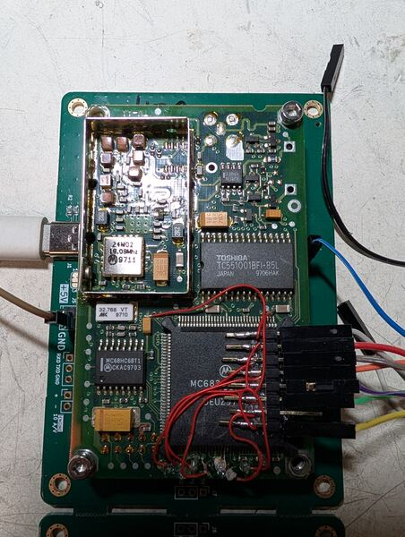
8ch, top (TM-AA), on jig, BDM wiring, RF can open (24M02)
 8ch, top on jig before wiring; CPU MC68331CFC16 0E93N DEUZ9702
8ch, top on jig before wiring; CPU MC68331CFC16 0E93N DEUZ9702
 8ch, crystal 32.768 VT MC 9710, MC68HC68T1 CKAC9703
8ch, crystal 32.768 VT MC 9710, MC68HC68T1 CKAC9703
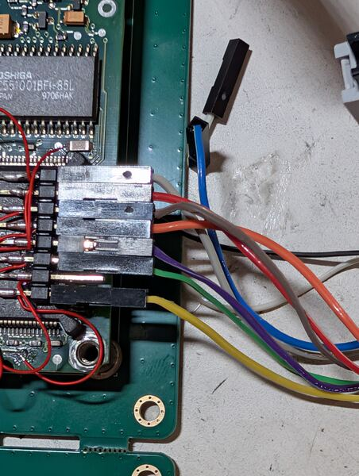
8ch, hand wiring from CPU pins to BDM header
 8ch on jig with BDM pod on ribbon cable
8ch on jig with BDM pod on ribbon cable
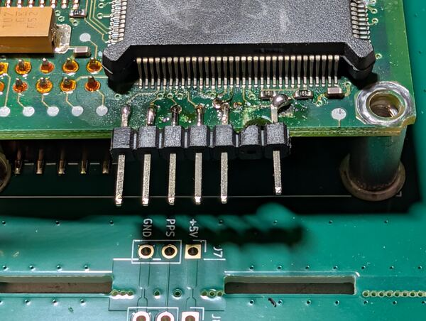
8ch, header soldered to the CPU pins for BDM
 8ch, bottom (BM-AA, 84D44800M01), label *3W1VE*
8ch, bottom (BM-AA, 84D44800M01), label *3W1VE*
 8ch, bottom, second shot
8ch, bottom, second shot
6-channel *7VGN4* (Z3801A)
 6ch, top (TM-AB), RF can closed (326/2486 2643686MAC)
6ch, top (TM-AB), RF can closed (326/2486 2643686MAC)
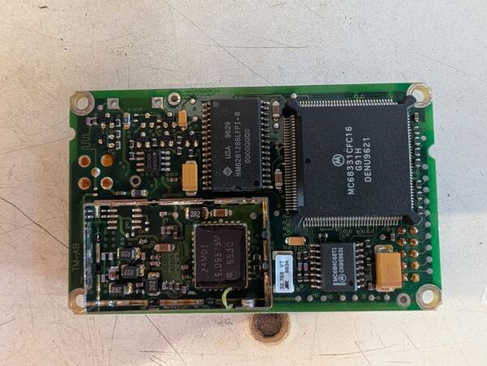
6ch, top, RF can open (24M01 19.09575M)
 6ch, top, RF can open, second shot
6ch, top, RF can open, second shot
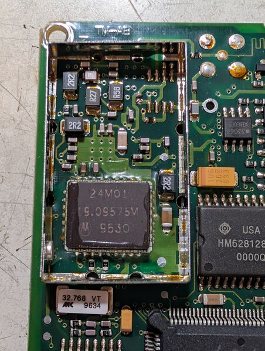
6ch, close-up: hybrid 24M01 19.09575M 9630, crystal MC 9634
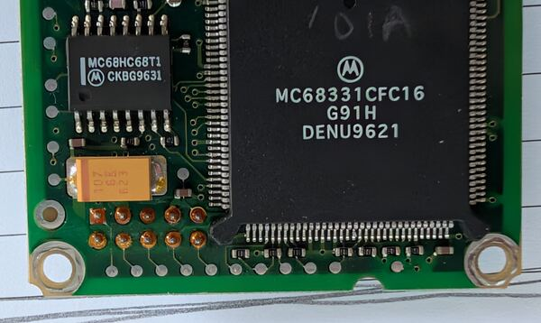
6ch, close-up: MC68331CFC16 DENU9621 ('01A), MC68HC68T1 CKBG9631
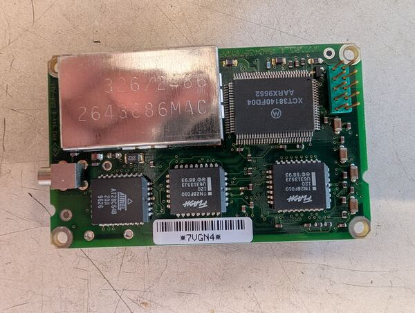
6ch, bottom (BM-AB), RF can closed, label *7VGN4*
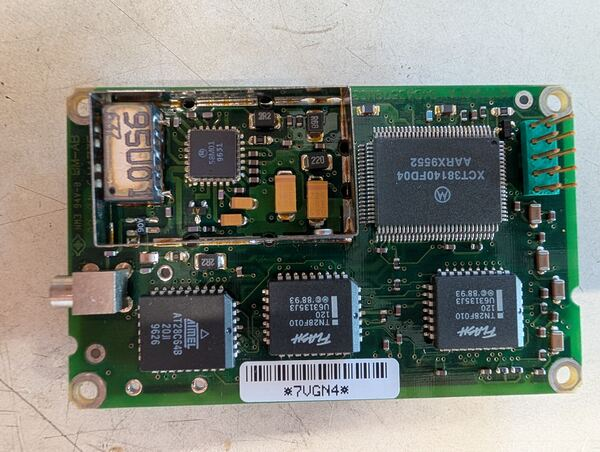
6ch, bottom, RF can open (58M01, 95U01)
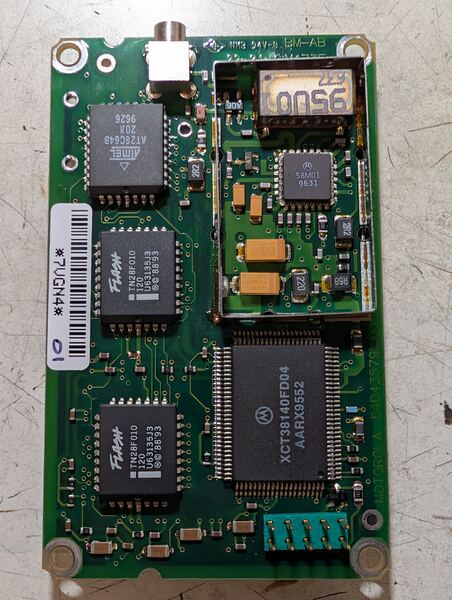
6ch, bottom, RF can open, second shot
6-channel *7VENR* (Z3805A)
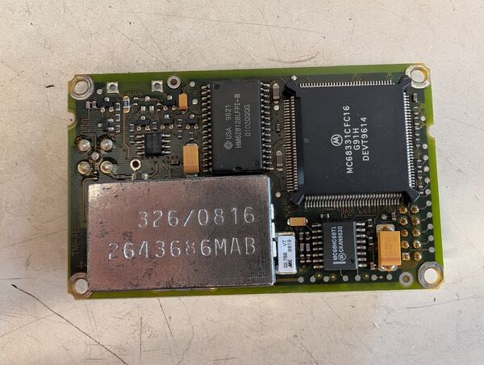
*7VENR*, top (TM-AB), RF can closed (326/0816 2643686MAB)
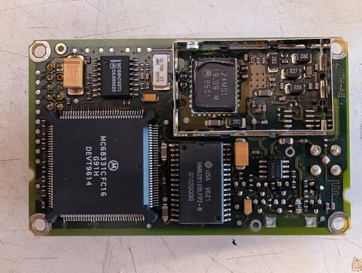
*7VENR*, top, RF can open (24M01 19.09 M 9601)
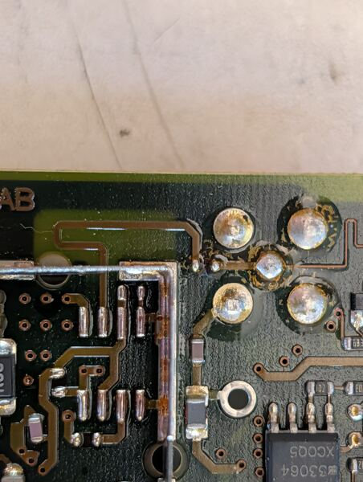
*7VENR*, close-up: antenna pads, 33064
 *7VENR*, close-up with ruler: MC68331CFC16 DEVT9614 ('05A), MC68HC68T1 CKAN9620
*7VENR*, close-up with ruler: MC68331CFC16 DEVT9614 ('05A), MC68HC68T1 CKAN9620
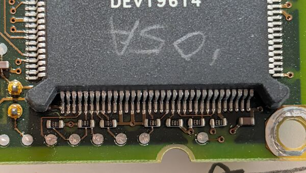
*7VENR*, close-up: CPU lower edge
 *7VENR*, bottom (BM-AB, 84D43579M03), RF can closed
*7VENR*, bottom (BM-AB, 84D43579M03), RF can closed
 *7VENR*, bottom, RF can open (58M01 9623, 95U01 624)
*7VENR*, bottom, RF can open (58M01 9623, 95U01 624)
Open
- 6-channel sensitivity loss: continuity of antenna → A06 → 95U01 SAW → 58M01, and the A06 bias on the bottom side, off the jig.
- Confirm the ÷656 is in the hybrid (29.110 kHz on a hybrid pin, traced to EXTAL).
- Hybrid (TCXO) frequency error and its sign (0.17 ppm from the drift).
- QSPI PCS1 and MISO to the 24M0x hybrid (SCK and MOSI reach it).
- Whether CS9/CS10 have chips fitted (CS0–CS3, CS6 are never accessed; CS5 is one boot read).